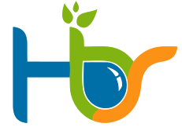

Servicios Especializados de CENIGAA
Unidades Especializadas

Es una unidad móvil de diagnóstico y valoración ambiental de reacción inmediata. Tiene capacidad para generar información en tiempo real resultado de técnicas de campo. Sus Facilidades tecnológicas permiten:
- Determinar Parámetros de Calidad de Agua
- Diagnosticar en primera aproximación incidentes ambientales.
- Valorar recurso suelo.
- Generar Planes de Fertilización – Tecnología SMART FERTILIZER.
- Toma de Muestras de Matrices Agua – Suelo – Planta.
DSGAA (DINAMICA DE SISTEMAS GEOAGROAMBIENTALES)
El grupo de investigación en Dinámica de Sistemas GeoAgroAmbientales -DSGAA es la unidad especializada de investigación de CENIGAA. Esta unidad integra una visión holística del entorno para obtener una interpretación comprensiva de los procesos en el marco de su área de acción para dar solución a limitaciones y problemáticas que limitan el desarrollo de las regiones. La potencia computacional, la teoría de sistemas y el uso de diversas herramientas y enfoques de modelación son algunas de las fortalezas que soportan las líneas de I+D+i del Centro
NRMA es un laboratorio de cómputo científico para las ciencias ambientales e Ingeniería que se enfoca en las áreas estratégicas de Energía, Agricultura y Ambiente mediante iniciativas de Ciencia, Tecnología e Innovación (CTeI). Fue creado con el propósito de fortalecer las capacidades de investigación para la competitividad regional y punto de enlace para la colaboración científica e interinstitucional.
La modelación matemática, la algoritmia y la programación de alto nivel en lenguajes independientes de plataformas y orientados a objetos, implementado con técnicas de High Performance Computing permiten abordar retos del análisis de procesos GeoAgroAmbientales en el marco de la ciencia de datos integrada al uso y desarrollo de herramientas computacionales a partir de la estocástica, determinística, sistemas inteligentes, machine learning y otras emergentes. SIDECTI Huila – CENIGAA – CORHUILA

DOUBLEE Es la división de servicios especializados de CENIGAA con énfasis en la relación Energía – Ambiente. Cuenta con un STAFF de profesionales especializados de alta formación. Experiencia en el Sector Minero Energético a nivel nacional e internacional.
- Vigilancia Tecnológica
- Inteligencia Competitiva
- Benchmarking
- Gestión de Conocimiento
HBS (HIDROBIOSISTEMAS)
HBS – HidroBioSistemas es la división de servicios especializados de CENIGAA con énfasis en la relación Agricultura – Ambiente. Cuenta con un STAFF de profesionales especializados de alta formación. Experiencia en el Sector Minero Energético a nivel nacional e internacional.
G-PRO (GEO PROCESSING)

Data Science – Machine Learning - HPC La integración de Sensores Remotos Multiespectrales y Computo científico permiten generar soluciones basadas en las características particulares y diferenciales de los sistemas
Aplicación AGRO - Agricultura de precisión en:
- Fenotipado
- Variabilidad espacial
- Estrés hídrico
- Fito-sanidad
- Nutrición vegetal
- Modelo digitales de terrenos
Aplicación GEO - Minero energético
- Gestión Minera a cielo abierto
- Estimación de reservas de hidrocarburos
- Generación de datos geoespaciales
- Diagnóstico de incidentes ambientales
Aplicación AMBIENTE - Monitoreo ambiental
- Recursos forestales y suelos
- Seguimiento a las estrategias de compensación ambiental y SbN
- Ecohidráulica & Ecohidrología
- Modelos digitales de terreno
- Diagnóstico de incidentes ambientales

Agribusiness 4.0 (AGB4) está basado en los ODS y se enfoca en el desarrollo socioeconómico de productores de los diferentes sectores agrícolas que apropien las SbN como parte de su estrategia de sostenibilidad.
AGB4 es plataforma tecnológica gestora de conocimiento como apoyo a la consolidación de un Sistema se Seguridad Agroalimentaria de acuerdo con la definición FAO y que implementa mecanismos de fortalecimiento empresarial rural, acreditación de la cadena de valor de la productividad en el marco de la valoración de servicios ecosistémicos de los sistemas para su visualización como oferta comercial nacional e internacional.
ABG4 busca incentivar las cadenas cortas de comercialización en el marco de desarrollo sostenible con el propósito de brindar un apoyo mediante fomento agropecuario integrado con enfoque de sostenibilidad con el propósito de generar un diferencial positivo y mejorar la posición del productor primario en la cadena de valor de cada subsector impactando positivamente el margen de utilidad de la base productiva y sus efectos benéficos colaterales.